[CMU15445]:树索引1
在数据库中，通过索引来达到快速检索数据的目的，之前的哈希表就是一种索引的数据结构，哈希表在单值查询时十分快速，最好能够到O(1)的时间复杂度，但是确不支持范围查询，在工业中，最常被使用的还是接下来将要介绍的B+树索引结构
B+树原理
关于B+树的各种操作网上给出的很多，并且十分繁琐，可以参考下面的链接
https://www.cnblogs.com/nullzx/p/8729425.html
B树(B-树)与B+树的区别
在B树中，每个节点都保存了key 和 value, 而在B+树中，仅仅在叶子节点中才保存, 非叶子节点中只包含key与指向子树的指针
一棵B+树看起来就像这样
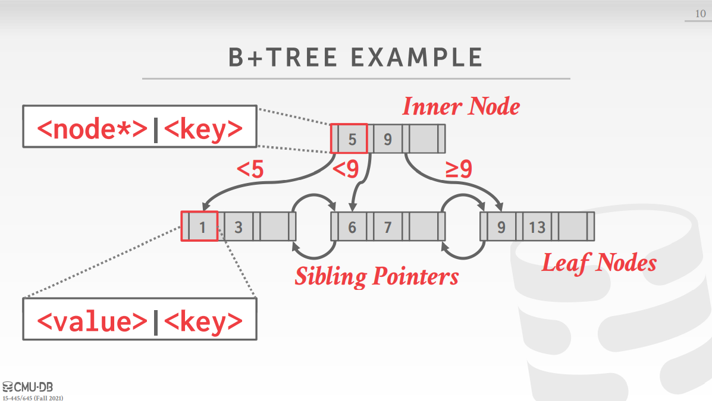
其中叶子节点存的value，可以是page id,也可以存储真实的tuple, Oracle采用了前一种做法，MySQL采用了后一种做法
Selection Condition
搜索码
当在数据库中以<a, b, c>三个属性(attribute)建立索引时, 那么{a, b, c}就被称为search key, B+树相对于哈希表来说的另一个优点在于可以使用search key中的部分属性
B+树相对于哈希表来说的另一个优点在于可以使用搜索码中的部分属性
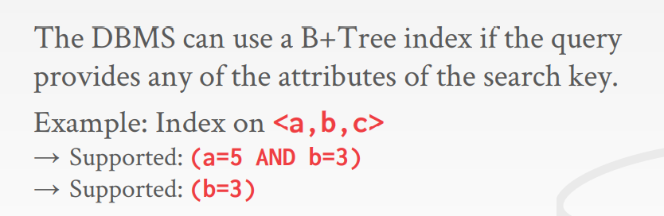
在上图中，搜索码为{a, b, c},那么采用B+就可以采用部分搜索码就能完成搜索，而对于哈希表来说，必须需要完整的搜索码才能够产生一个正确的哈希值
假设搜索码有两个，执行查询select key=A, 那么只需要沿着叶子节点，找到第一个属性为A的所有节点即可
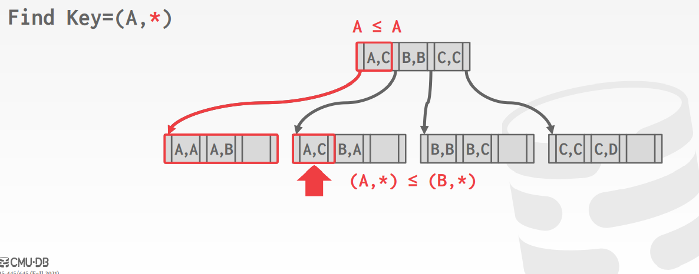
聚簇索引
聚簇索引，即culsted Index, 不是一种具体的索引，而是一种数据的存储方式，是指这样一种索引: 其搜索码通常就是主键，其叶子节点本身存储的就是数据，而只要叶子节点相邻，他们中存储的数据的物理位置也应该相邻，即聚簇
非聚簇索引(辅助索引，二级索引): 叶子节点存储的是主键值，搜索码是非主键的属性
为什么使用非聚簇索引
- 已经维护了一套主键索引+数据的B+Tree结构，如果再有其他的非主键索引的话，索引的叶子节点存储的是主键，这是为了节省空间，因为继续存数据的话，那就会导致一份数据存了多份，空间占用就会翻倍。
- 另一方面也是一致性的考虑，都通过主键索引来找到最终的数据，避免维护多份数据导致不一致的情况
为什么使用聚簇索引
聚簇索引对于范围查询来说很有利，因为相同前缀的数据会聚集在一起，可以减少I/O的次数
重复搜索码
可以通过修改B+树的结构用以支持重复搜索码，常见的实现方案有两种
- 一个搜索码在叶子节点中只有一个，为每个搜索码维护一个list,如果有重复搜索码的value被插入，那么接在list之后
- 在叶子节点中支持重复的搜索码，重复的搜索码可以放在不同色叶子结点中
B+树的设计
节点大小
如果索引空间足够小，那么他就可以被存放于内存当中，如果太大，就只能放于磁盘当中，依赖于存储的介质，B+树的节点大小页有所不同
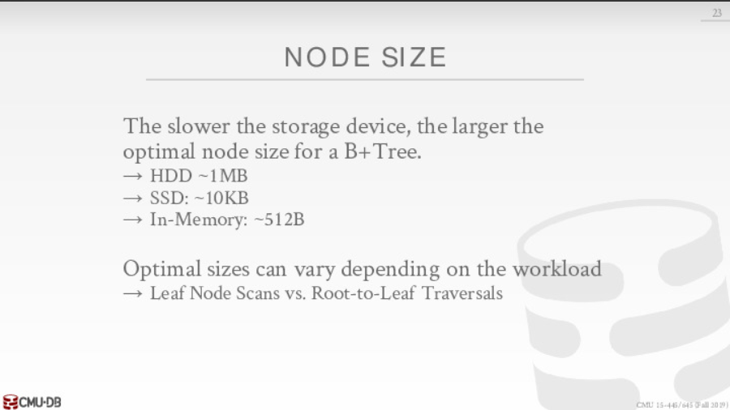
Merge时机
B+树为了保持平衡，需要不断进行节点之间的merge,但是这样做往往需要空间开销，可以采取延迟Merge的方式，
如果每次进行插入或者删除操作时都对索引进行更新，这样浪费大量的时间，因为对树进行更新就意味着对树进行加锁
可变长度的key
serarch key中可能包含了varchar之类的属性，因此key的长度可能是不固定的，对于可变长度的key，有以下几种解决方案
在key中存储指向属性的指针
这样做可以节省空间，实际上在早期内存不足的时候才使用这种做法，因为tuple存储在磁盘中,所以根据指针访问属性即意味着磁盘I/O, 太慢了，现在没人使用
直接存储变长key
这种方法一般不会使用，因为处理可变长度key的开销太大了
填充
选取最大的key,将其他key填充至和其长度一样长
key映射
在内存当中存储key-value的pair构成的字典结构,而在node当中存储对应的key在字典当中的下标
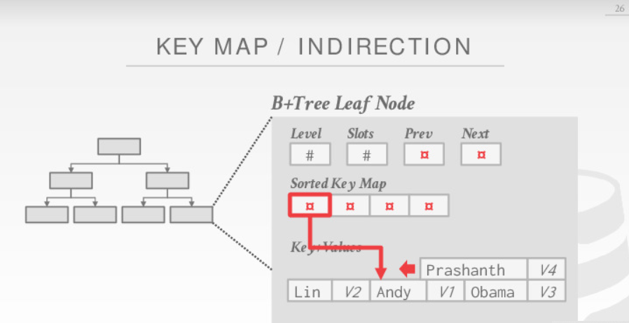
还可以在node中存储key的前缀，用于加快字典查找
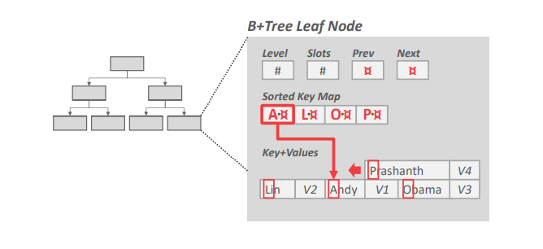
节点内部访问
节点内部保存着很多关键码，在一个节点内部查找出我们所需要的key也有几种方法
线性
线性查找的时间复杂度为O(n)
二分
该方法的时间复杂度为O(lg(n))，是一种比较高效且简单的方法
interpolation
该方法的思想是利用Node中存储的元数据来推测出我们需要查找的key在node中的大概位置
优化
前缀压缩
该技术的思想是在每个内部节点可以不用存储整个key, 如果key是字符串类型的话，可以取出这些字符串的公共部分，只要存储的内容能够将其区分即可
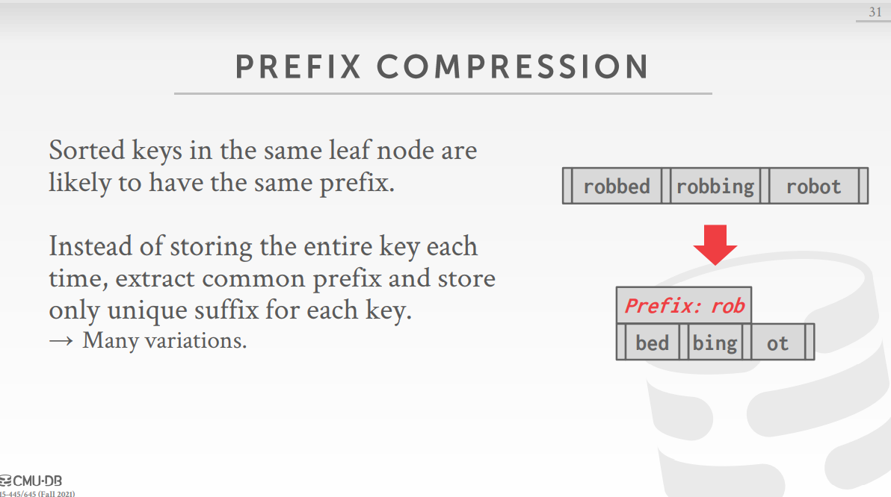
去除重复
在key可以重复的情况下，可以让一个key紧跟多个value
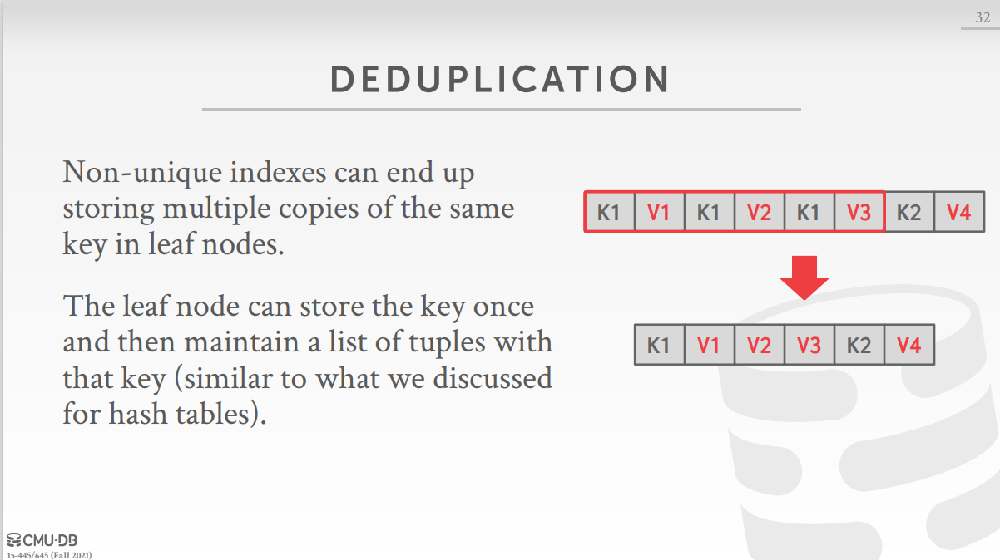
批量加载
有时，在构建B+树之前，我们就已知了所有的key，那么就不需要每插入一个数据就更新一次B+树索引，可以直接提前构建好B+树索引，这样可以减少更新所带来的的维护
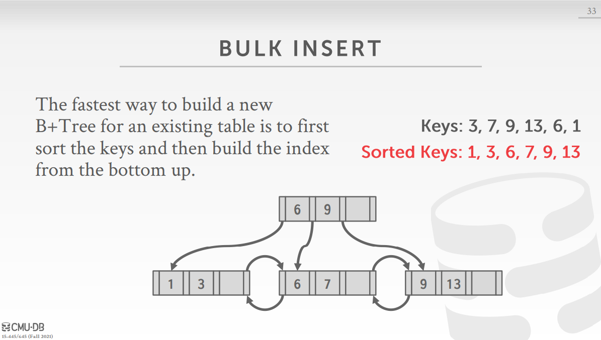
B+树操作伪代码
下面是《数据库系统概念》中关于B+树的各种操作的伪代码
- 点查询
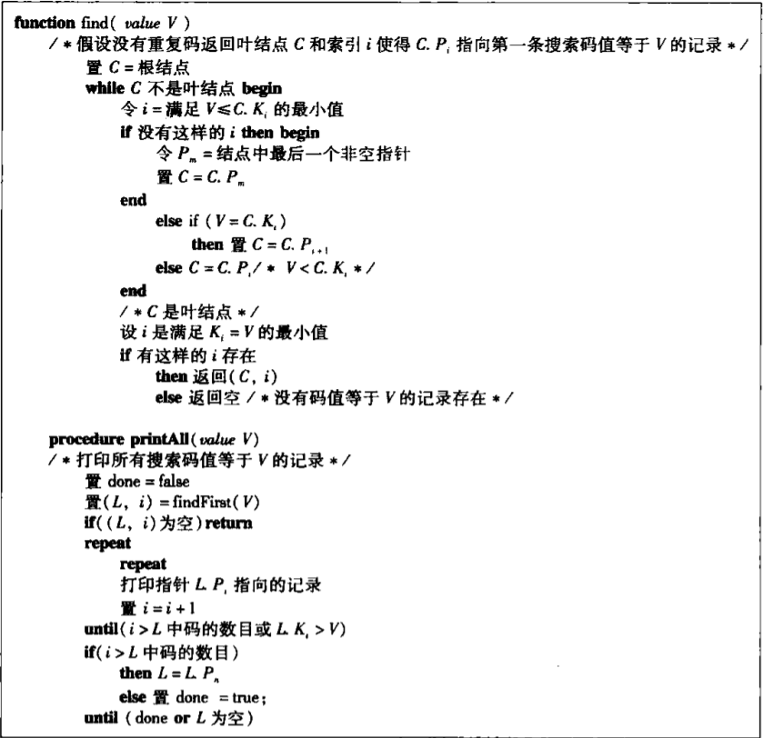
插入
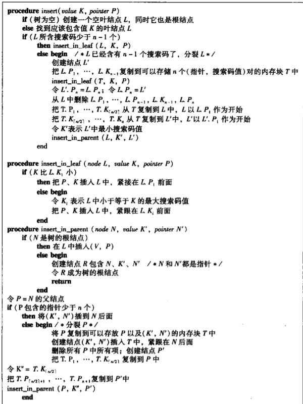
删除
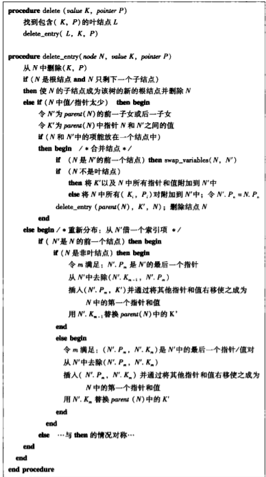
本博客所有文章除特别声明外，均采用 CC BY-SA 4.0 协议 ，转载请注明出处！